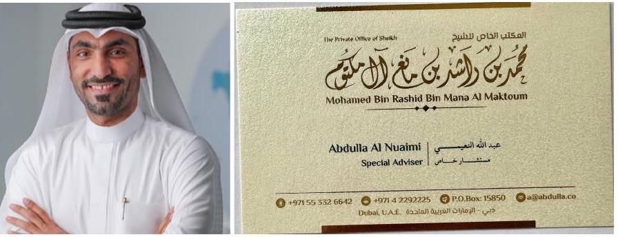
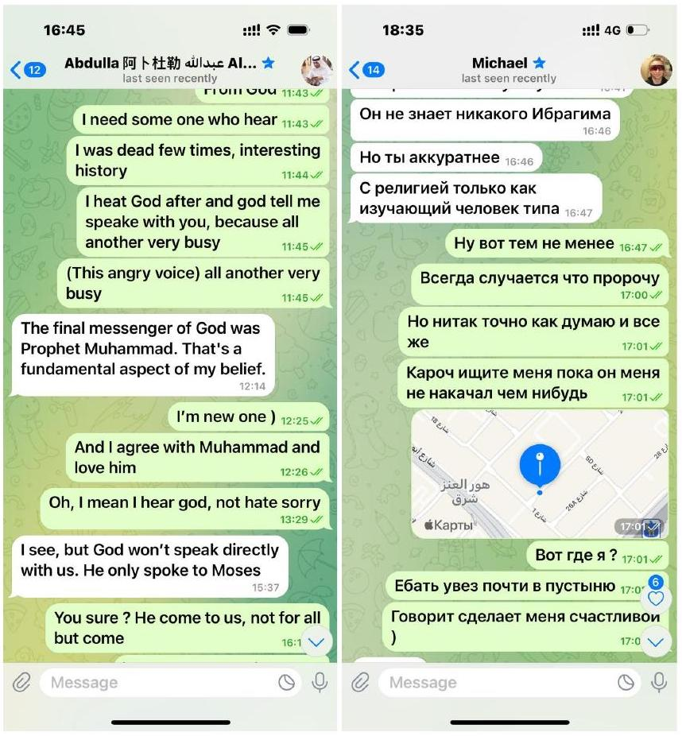
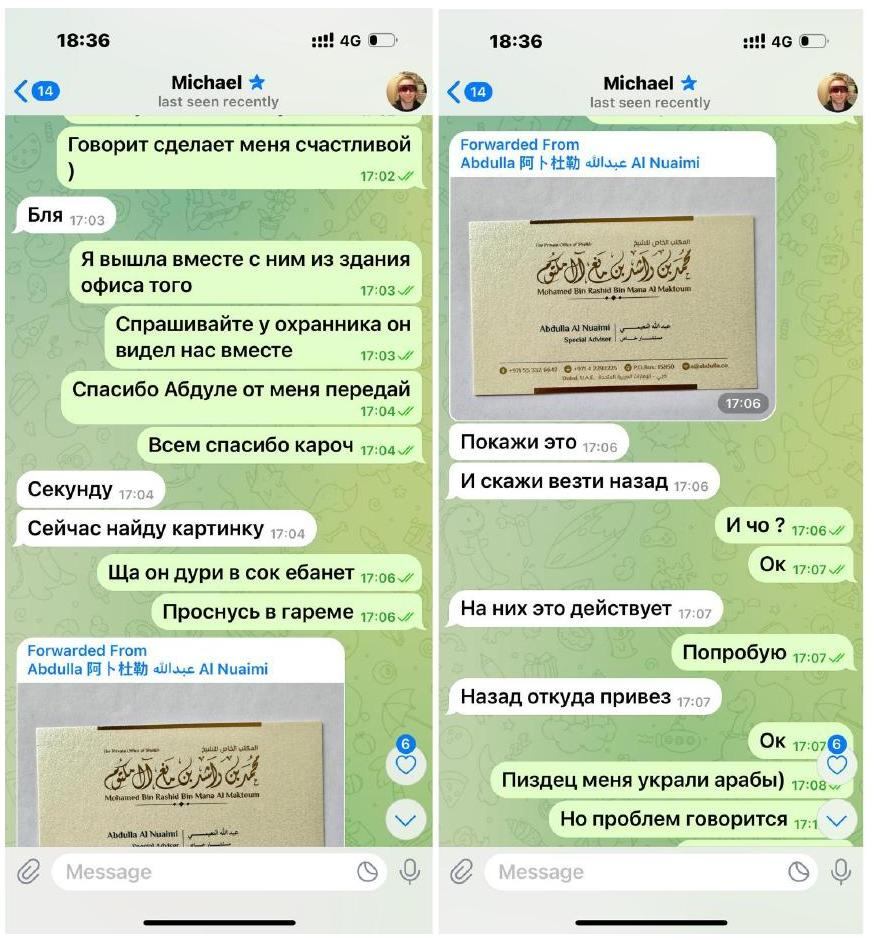
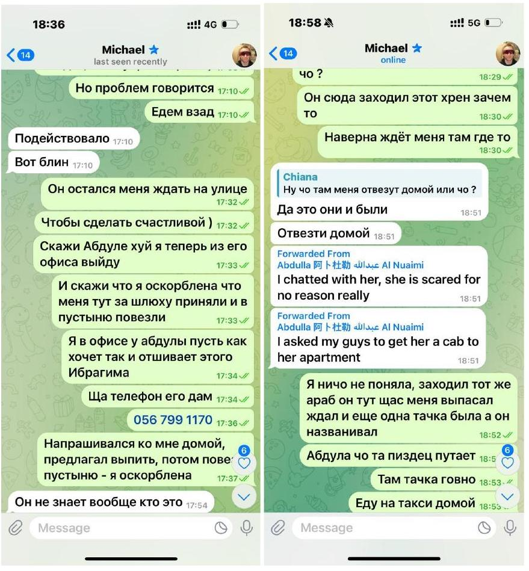
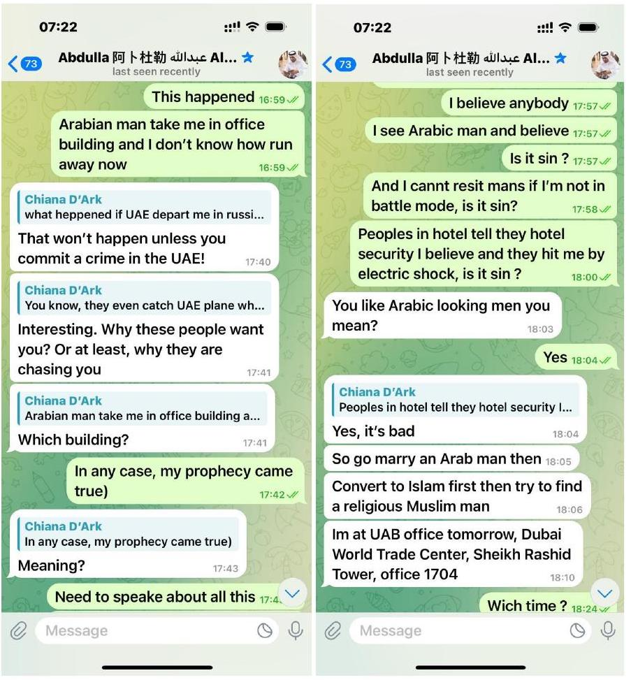
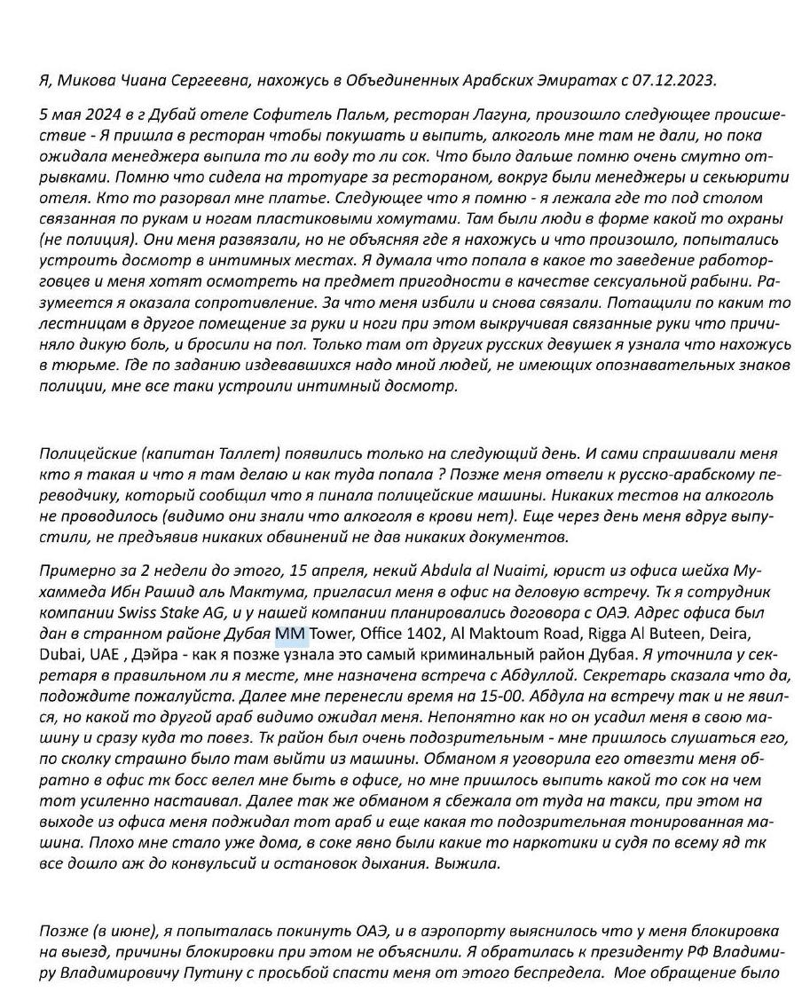
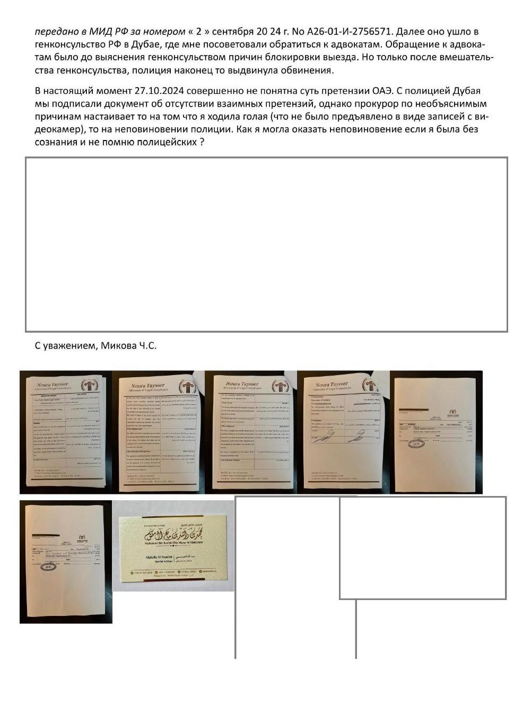
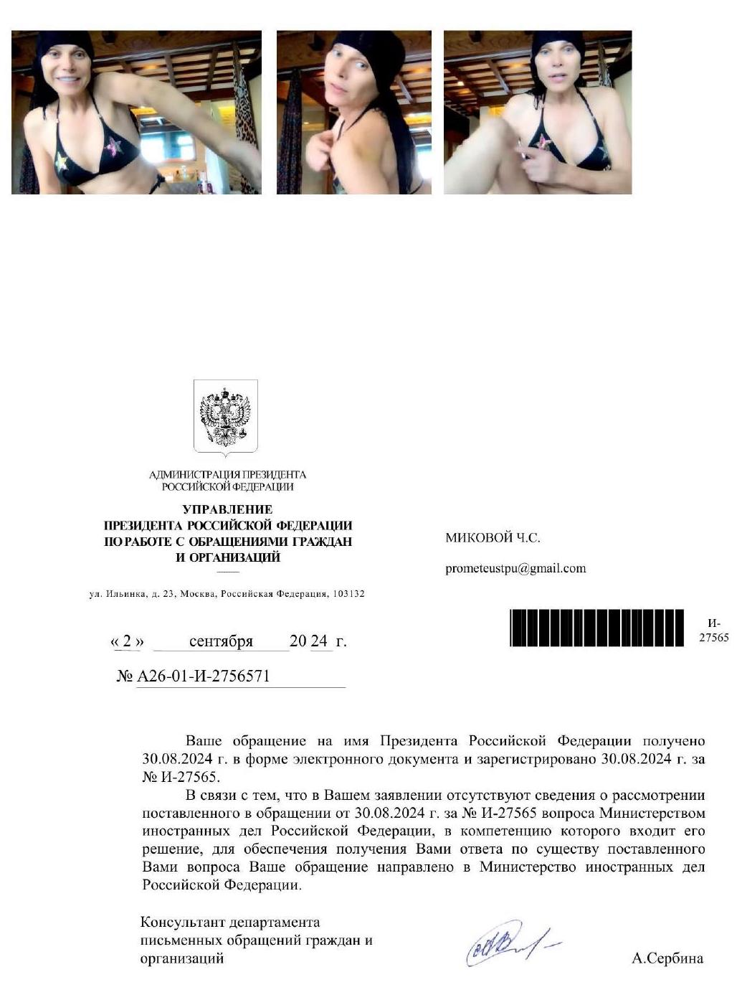
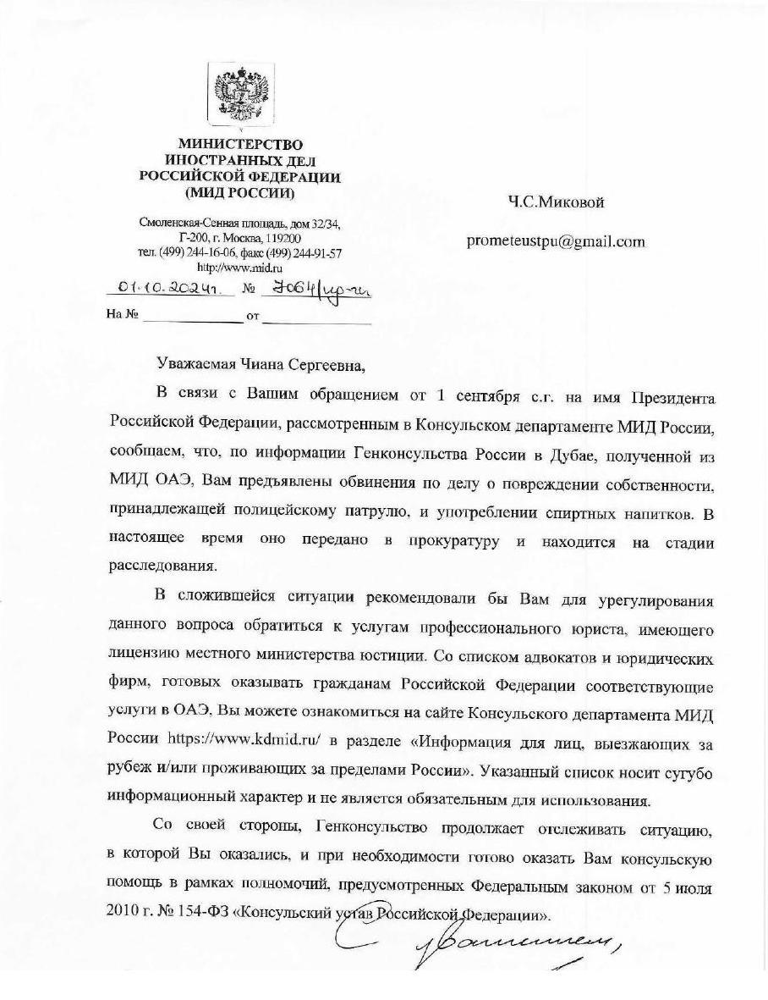

Аль Нуайми — правящая династия эмирата Аджман, одного из семи эмиратов ОАЭ. Во главе — шейх Хумейд бин Рашид аль Нуайми, у власти с 1981 года. Семья — одна из старейших, ведёт происхождение от племени аль-Наим. Входят в Высший совет правителей ОАЭ — как главы одного из эмиратов. Имеют вес в федерации, но не такого масштаба, как Аль Нахайяны (Абу-Даби) или Аль Мактумы (Дубай). Держат контроль над судами, земельными делами, частью экономики Аджмана (включая свободную зону). 🤝 Связи с Мактумами: Связаны через родственные и политические браки, как и все правящие династии ОАЭ. Участвуют в совместных инвестиционных проектах, особенно в недвижимости и логистике. Через отдельных членов рода имеют вход в дубайский аппарат, особенно в юрструктуры и надзор. Аль Нуайми — не номер один, но близки к ядру. Используют Аджман как "тихую гавань" — для регистрации фирм, переоформления собственности и обходных схем. Абдулла аль Нуайми и ему подобные — часто работают в дубайских офисах, но действуют от имени меньших эмиров с санкции сверху. Итог: Династия влиятельна, но не автономна. Их сила — в связях, в лояльности к центру и в способности решать "тихие вопросы" без шума. Если Мактумы — витрина, то Нуайми — переходник между витриной и подвалом. Абдулла аль Нуайми — краткая хроника провала Статус и роль Абдулла аль Нуайми публично представляется штатным юристом офиса шейха Мухаммеда бин Рашида аль Мактума. Фактически он исполняет поручения, требующие неофициального давления: поиски чувствительных IT-активов, манипуляции юридическими механизмами и нейтрализацию фигур, мешающих интересам правящего дома. Интерес к Curve Finance До контакта с Королевой Абдулла проявлял повышенную активность вокруг DeFi-протоколов, в частности Curve Finance, пытаясь получить инструменты управления. Это стало одной из причин его готовности вступить в диалог, когда Королева запросила защиту после первого нападения в Дубае. Три месяца имитации помощи Абдулла кивал, обещал и «вёл работу». На деле он затягивал процесс, собирая сведения о партнёрах Королевы и проверяя возможности извлечь выгоду. Ситуация обострилась: на фоне очередных атак Борисыча и его людей, безопасность Королевы оставалась фиктивной. Второе нападение и «доклад о Пророке» После второго нападения Королева обратилась к Абдулле лично. В ответ тот без промедления доложил шейху аль Мактуму о «необычной гостье, объявившей себя пророком». Семья шейха появилась в ресторане, чтобы увидеть её собственными глазами; после этого, по всей видимости, Абдулла получил разрешение действовать силовым путём. Покушения в Sofitel Palm Под прямым кураторством Абдуллы были организованы несколько попыток устранения Королевы в отеле Sofitel The Palm. Одновременно он инициировал «подставу с кейсом» (судебное дело № 19245/2024 (Dubai Courts)), рассчитывая создать юридическое обвинение и продлить её удержание в ОАЭ через travel-ban. Попытка удержать Михаила в ОАЭ Следующим шагом стала попытка заблокировать выезд Михаила — ключевого союзника Королевы. Абдулла манипулировал визовыми документами и дезинформировал миграционные службы, создавая искусственные основания для запрета на выезд. Методы давления Множественные юридические ловушки (контракты, обвинения без доказательной базы). Привлечение местных силовиков для «оперативного сопровождения». Шантаж владельцев крупного бизнеса. Использование статуса «представителя шейха» для подавления огласки. Через Абдуллу шейх аль Мактум держит на «коротком поводке» крупных бизнесменов, вынуждая их идти на крайние меры. Так владелец Sofitel The Palm привлёк персонал и инфраструктуру отеля для попытки отравления Королевы без каких-либо личных мотивов; факт подставы и интоксикации задокументирован. Итоговые результаты — Все покушения провалены; общественный резонанс и публикации Королевы сделали дело токсичным. — Travel-ban не удержал Королеву: факты давления обнародованы и задокументированы. — Попытка блокировать Михаила сорвана. — Действия Абдуллы зафиксированы; его репутация внутри офиса шейха подорвана. Вывод Абдулла аль Нуайми обладал ресурсами династии, но просчитался в оценке противника. Его жадность к чужим активам и уверенность в безнаказанности обернулись разоблачением и утратой влияния. Королева вышла из дубайской ловушки; досье на Абдуллу теперь открыто миру.







